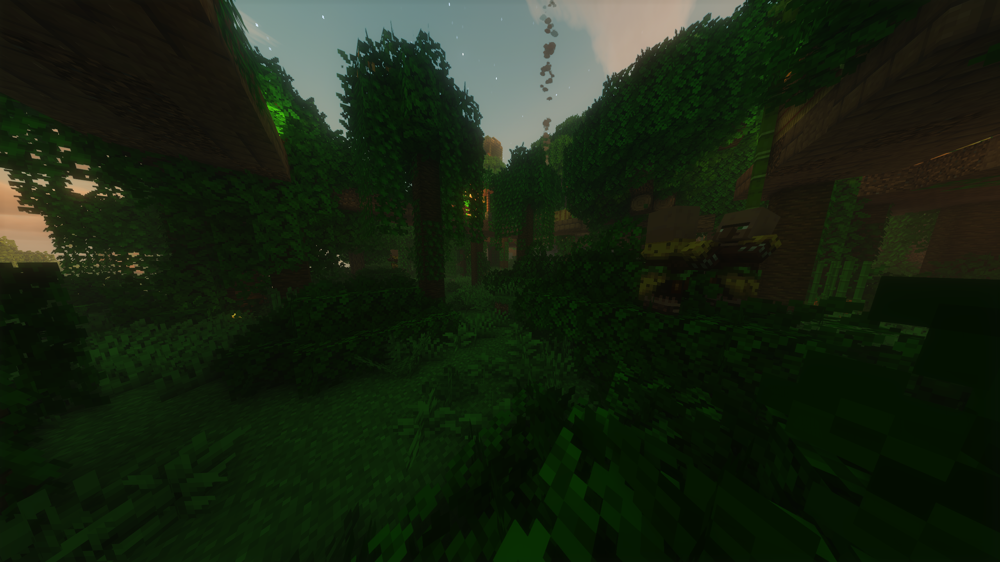
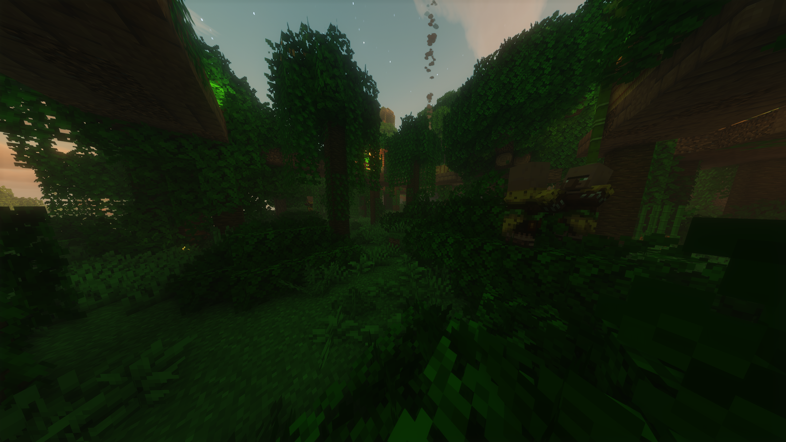

What is Celestial ?
Celestial is a vanilla-friendly modpack designed to aims to keep the vanilla aspect of minecraft while enhancing the experience. Instead of adding numerous new addon mods, it focuses on reimagining existing structures and mechanics. Additionally, it includes quality-of-life improvements to make gameplay smoother and more enjoyable throughout your adventure.


 
